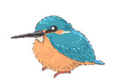

活動メンバーについて¶
ゆかコネNEOを楽しく使いながら、みんなにその使い方や文化を広げてもらおうということで、アンバサダーを任命しています。
今期は、その活動の幅から、エバンジェリスト（ガイド）、アンバサダー、研究生、活動支援者の４つに区分けしています。
第４期¶
順不同
公式ストリーマー/イラストレーター¶
ぬる(null)¶
一言コメント
突如現れた宇宙人！？ 地球のことを勉強中、日本語もまだまだだけどいろんな言語をマスターしていく…かも？アプリのアップデートともに、宇宙人の成長も見守っててね！
※お絵描きが得意！生放送ではお絵描き配信も！アプリ内のイラストも担当しています、何卒！！
An alien suddenly appeared!? Studying Earth right now. Still learning Japanese, but might master all kinds of languages... maybe? Watch the alien grow along with the app updates!
*Great at drawing! I also do live drawing streams! I handle the illustrations in the app too, so please support me!!
エバンジェリスト/公式ガイド¶
clea¶

** 一言コメント **
リアルタイム翻訳字幕ツール用いて"１つのゲームを世界で楽しめる、難聴の人にも楽しんで貰いたい"をモットーに活動しています。たくさんの可能性を皆さんにお届けする役割として、様々な領域で皆さんに体験してもらい、導入のお手伝いをしています。アバターワークの領域でも、バーチャルスタッフとしてリアル×バーチャルの架け橋としてお仕事もしています。
アンバサダー¶
L*aura💫バーチャル世界の歌姫ローラ¶


** 一言コメント **
歌とVRを中心に活動しており、主にゲームやおしゃべり配信のときに「ゆかコネneo」を使って配信しています！
語学学習アプリ「Duolingo」で、英語・イタリア語・中国語を勉強中！
アンバサダーで一番字がでっかいとのうわさ……！？真相は配信で確かめてね！
宅島ラン¶

** 一言コメント **
創作活動と面白いことが大好きな「バーチャル邸宅お姉さん」宅島ランと申します💛💜ゲームやASMRなど、癒しや楽しい時間に寄りそえるような活動をしております～。「ゆかコネ」でご一緒に、もーっと世界を広げていきましょう！
監獄ミハル¶

** 一言コメント **
みんなを見張る、みんなと楽しむ！ゆるっと関西弁Vtuberの監獄ミハルやよ～！初めての方に寄り添ったVR技術の発信や交流、怖がりによるホラー挑戦、その他気になるゲームプレイなど、いろんな配信をさしてもろとるよ。いろんな配信を窓口にして、VRやゆかコネといった技術やツールを知ってもらえたら嬉しいな！
未知カケル¶

喜多ななち¶
** 一言コメント **
Twitchをメインに世界へ向けて配信中。活動内容は主にゲーム・歌です。ゆかコネに助けられここまで成長できました、世界中の方と繋がれる喜びをもっと伝えていきたいです。
早瀬やよい¶

** 一言コメント **
声優・VTuberの早瀬です◎
中国語とスペイン語を配信でリスナーさんに教わって、いまではローカライズや全編フル中国語の漫画動画等、仕事でも多言語を活かしてます！
3期から継続で、引き続きユーザーとしても使い込みたいのでいっぱい機能学んでいきましょうー♪
卯塚ウウ¶

** 一言コメント **
(たぶん)世界で唯一のバルーンアーティストVtuberの卯塚ウウ(うづかうう)です！プロの大道芸人として活動しつつ、配信したりバルーンアートの3Dデータ受注制作なども挑戦してます。コメントアプリわんコメのアンバサダーも兼任中。ツールが大好きで、いつもいろんなツールの組み合わせで何か面白い事ができないか考えてます！ゆかコネは翻訳だけじゃなく、いろんな「楽しい」が作れるよ！みんなでゆかコネ使いこなしていきましょううううう！！
朝日ゆい¶

嬉望もち¶
Kimochi Mochi 【2期～】 【わんコメわんバサダー】

** 一言コメント **
主にYoutubeでほぼ毎日ゲーム配信を中心に活動している、ボイチェンバ美肉Vtuber嬉望もちです！超多機能コメントアプリ『わんコメ』の公認アンバサダーも兼任しています！中国の配信サイトBilibiliでも同時配信していて、中国の皆さんとの言語の壁を超えたコミュニケーションを実現しようと頑張っています！
蜜眼天洙¶

** 一言コメント **
三つ目の妖怪ですが人間にまぎれて日々すごしてます！多趣味で三つ目なぶん目移り激しいですが好きを桜花しつつ…歌にゲームに3Dにうつつを抜かしながらもマイペースに活動中です！現代語は難しいのでゆかコネ担いで見聞を広げにいざまいる！！！
母上そらな¶

** 一言コメント **
50代お母さんVtuberです。
ゆかコネを通じて、世界の人と繋がれる楽しさ、
いくつになっても楽しむことを忘れない気持ちを伝えていきたいと思います。
ニコロ(Nicolo)¶

鬱ノ宮シアン¶
** 一言コメント **
メンタル福祉系Vtuberとして、障害福祉サービスの紹介をしています。
LiD（聞き取り困難症）の当事者として、ゆかコネを国内向けの情報保障の一環として使用しています。
誰もが情報にアクセスしやすい社会を目指して、ゆかコネを活用できればと思っています。
翡翠¶
hisui 【4期】

** 一言コメント **
主にのアークナイツ（タワーディフェンスゲーム）のプレイ配信をしている翡翠と申します。
毎日お世話になっているゆかコネNEOの便利さを広められたらと思っています。
よろしくお願いします。
かぐや¶
** 一言コメント **
お月様に住んでるうさぎさんに夢を見て…
FPSメインでまったり配信の｢かぐや｣と申します。｢かぐねえ｣とも呼ばれてるよ！
ジャンル問わず色んなゲーム、遊びに興味があるので、気づいたら手を出しているかもしれない…
おバカなのに多言語にも興味津々！！配信はみんなの居場所になれたらいいな︎︎。詳細はXにて随時更新！
＜2025.10.31更新＞
圭一ちゃん¶
** 一言コメント **
Twitchで活動している狐のVtuber、圭一ちゃんだよ！スローライフ系のゲームをまったり配信していて、ゆかコネでスペイン語と英語を勉強中！ゆったりした時間を一緒に楽しもうね！たまにアコギの弾き語りや絵本の朗読もしてるから、気軽に遊びに来てくれると嬉しいな！
研究生¶
- 現在は所属している研究生はおりません。